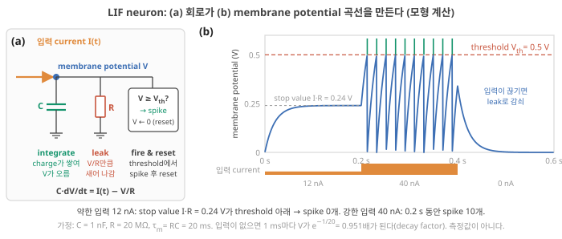
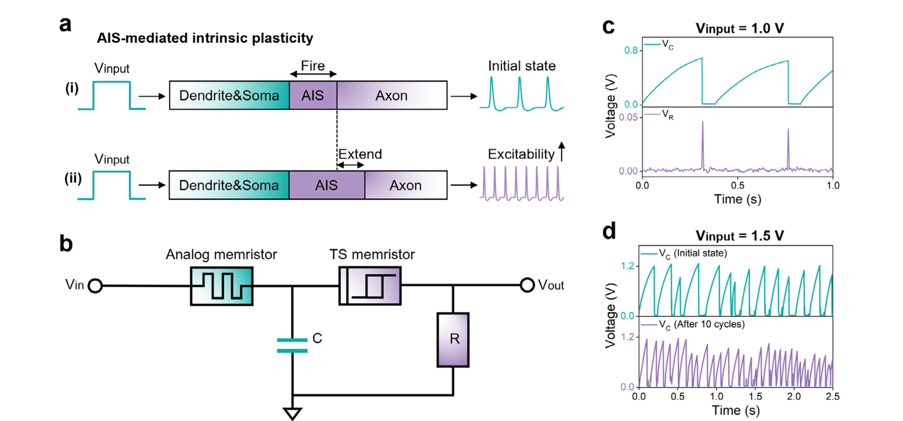
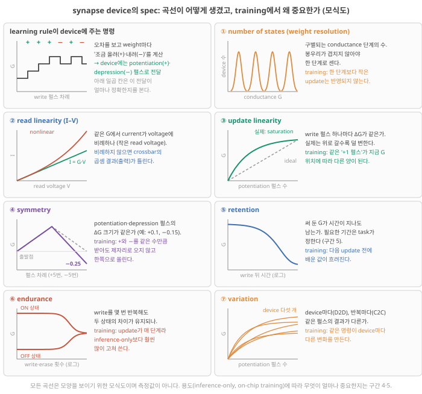
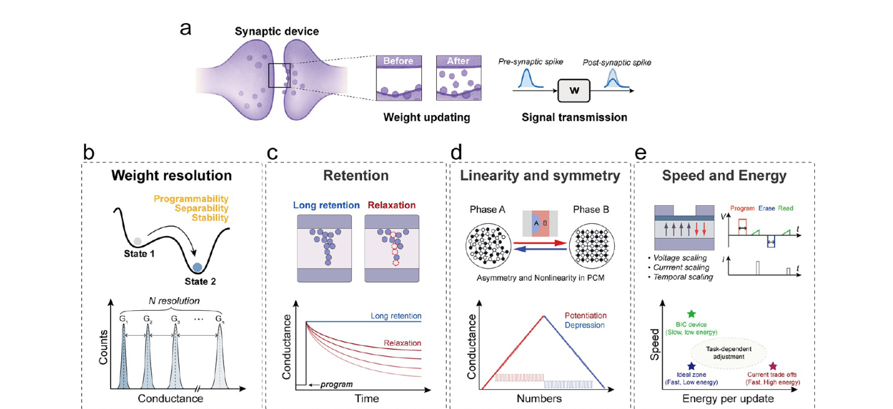
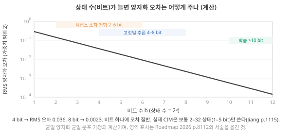
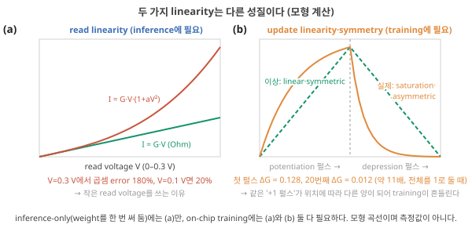
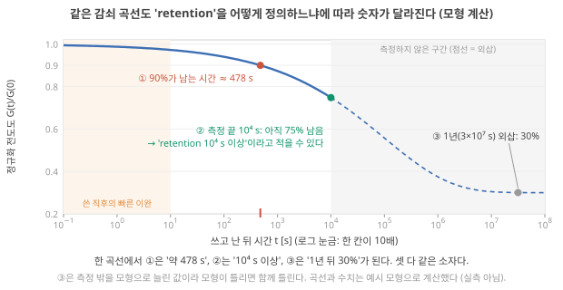
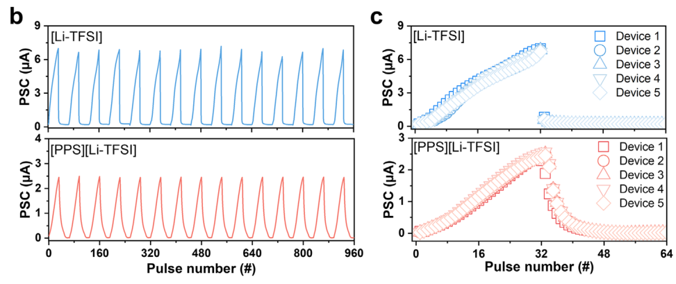
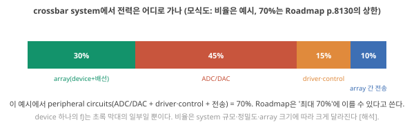
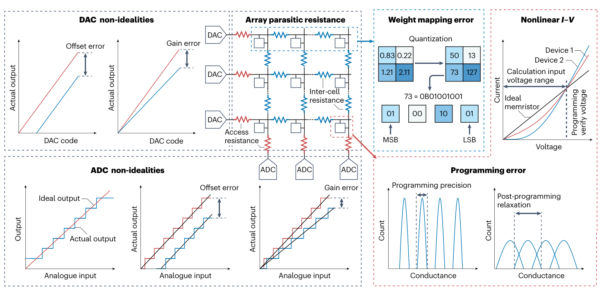

Day 8. LIF 회로, 시냅스 소자 사양, 주변회로 비용
Phase 1 · 왜 뉴로모픽 컴퓨팅인가
이번 질문 — 스파이킹 뉴런과 시냅스 소자에는 어떤 사양이 필요하고, 소자 하나의 에너지는 시스템에서 무엇이 되나?
배울 핵심 — LIF 회로(C 적분·R 누설·문턱), 시냅스 사양(상태 수·두 선형성·대칭성·retention·endurance·편차), 추론용 vs 학습용, 주변회로 비용
이후 쓰이는 곳 — Day 9 ADC가 필요한 조건, Day 22–23 retention의 정의, Day 30–31 소자 vs 시스템 에너지, Phase 4·5 LTP/LTD 곡선이 학습용 사양인지 판단
지난 학습 복습
지난 학습 단위(Day 7 · crossbar로 행렬–벡터 곱하기)의 핵심을 다른 예로 확인합니다. 고르는 즉시 맞았는지와 이유가 보입니다. 틀려도 아래 학습자료는 그대로 열려 있고, 틀린 문제에는 다시 볼 곳이 붙습니다.
학습자료
학습 구간 3. Day 5–6의 LIF 규칙을 회로로, 그리고 스파이킹 신경망 한 층
LIF 뉴런의 적분(integration)·누설(leak)·발화(firing)와 리셋(reset)을 회로 부품(C, R, 문턱 소자)과 식의 항에 짝지어 말하고, Day 5–6의 감쇠 계수 0.9가 계산 간격 Δt에 따라 어떻게 바뀌는지 보이며, 하이드로겔로 만든 실제 예(Lan 2026)에서 무엇이 적분을 하고 무엇이 문턱을 만드는지 가려낼 수 있게 된다.
3-1. 적분·누설·발화·리셋을 부품으로
Day 5–6에서 배운 규칙. 2구간의 crossbar는 "값"을 전압으로 넣고 전류로 받습니다. 스파이킹 신경망(SNN)은 값 대신 스파이크(높이가 거의 같은 짧은 펄스. 있음·시각·빈도가 정보)를 주고받습니다(Day 5 기초 7). Day 5–6은 그 유닛의 규칙인 LIF(leaky integrate-and-fire, 누설 적분–발화)를 1 ms 간격의 계산으로 배웠습니다(Day 5의 LIF 예제).
\[ u_{\text{다음}} = 0.9 \times u_{\text{지금}} + 6 \times (\text{그 1 ms 동안 들어온 입력 스파이크 수}) \]
- 적분(integration) 항 \(6 \times\)(입력 수): 입력 스파이크 하나가 막전위를 6 mV 올린다.
- 누설(leak) 항 \(0.9 \times u_{\text{지금}}\): 입력이 없으면 1 ms 뒤에 지금 값의 90%가 남는다. 0.9는 감쇠 계수(decay factor)다.
- 발화와 리셋(firing & reset): \(u\)가 15 mV 이상이면 스파이크를 내고 \(u\)를 0으로 되돌린다.
그리고 0.9는 막의 시간상수 \(\tau\)와 계산 간격 \(\Delta t\)로 정해지는 수였습니다: \(0.9 = e^{-\Delta t/\tau}\), \(\Delta t\) = 1 ms이면 \(\tau \approx\) 9.5 ms(Day 5: 값·계수·누설의 빠르기). 오늘은 이 규칙을 부품으로 만듭니다. Day 5–6에서 본 대로 막은 커패시터(막을 사이에 두고 전하가 쌓임)와 저항(늘 열린 통로로 전하가 빠져나감)을 나란히 붙인 회로로 근사됩니다.
무엇을 볼지. 그림 5의 왼쪽은 그 회로, 오른쪽은 회로가 만드는 막전위 \(V\)의 시간 곡선입니다. 왼쪽의 초록 C가 적분, 빨강 R이 누설, 오른쪽 상자(문턱 비교와 리셋)가 발화와 리셋입니다. 오른쪽 그래프는 가로축 시간(s), 세로축 막전위(V)이고, 빨간 점선이 문턱, 초록 세로선이 스파이크, 아래 주황 막대가 입력 전류의 크기입니다.

회로를 식으로. 입력 전류 \(I(t)\) [A]가 막전위 노드로 들어오면 두 갈래로 나뉩니다(Kirchhoff). 일부는 C에 쌓이고, 일부는 R로 빠져나갑니다. R로 빠지는 전류는 Ohm 법칙으로 \(V/R\)입니다. C에 쌓이는 전류는 \(Q = CV\)에서 전하가 늘어나는 빠르기, 곧 \(C\,dV/dt\)입니다. 들어온 전류 = 쌓이는 전류 + 빠지는 전류이므로
\[ C \frac{dV}{dt} = \underbrace{I(t)}_{\text{적분: 들어온 전류}} - \underbrace{\frac{V}{R}}_{\text{누설: 빠져나가는 전류}}, \qquad V \ge V_{th} \Rightarrow \text{스파이크}, \; V \leftarrow 0 \]
- \(V\) [V]: 막전위 = 커패시터 전압(기초 3). Day 5–6의 \(u\)(휴지 위로 올라간 양)에 해당합니다.
- \(\frac{dV}{dt}\) [V/s]: \(V\)가 1초에 얼마나 변하는가(변화율). 아주 짧은 시간 \(\Delta t\) 동안의 변화가 \(\Delta V \approx \frac{dV}{dt}\,\Delta t\)라는 뜻입니다.
- \(C\) [F]: 정전용량. 같은 전하가 들어와도 \(C\)가 크면 \(V\)가 덜 오릅니다. \(R\) [Ω]: 누설 경로의 저항.
- \(\tau_m = RC\) [s]: 막의 시간상수(m은 막, membrane). 양변을 \(C\)로 나누면 \(\frac{dV}{dt} = \frac{I}{C} - \frac{V}{\tau_m}\)입니다.
- \(V_{th}\) [V]: 문턱. 넘으면 스파이크를 내고 \(V\)를 0으로 되돌립니다. 발화·리셋은 미분 방정식이 아니라 그 위에 붙인 규칙입니다.
적분 항. 입력이 \(\Delta t\) 동안 \(I\)로 흐르면 전하 \(Q = I\,\Delta t\)가 쌓여 \(V\)가 \(Q/C\)만큼 오릅니다. Day 5–6의 "스파이크 하나 = +6 mV"는, \(C\) = 1 nF라면 스파이크 하나가 6 pC(= 6 mV × 1 nF)의 전하를 넣는 것과 같습니다 Claude 계산.
누설 항과 Day 5–6의 0.9. 입력이 없으면 식은 \(\frac{dV}{dt} = -\frac{V}{\tau_m}\)이고, 답은 \(V(t) = V_0\, e^{-t/\tau_m}\)입니다(\(V_0\): 처음 값). 그래서 \(\Delta t\)마다 끊어 보면 매번 \(V\)에 같은 수 \(e^{-\Delta t/\tau_m}\)이 곱해집니다. 이것이 Day 5–6의 감쇠 계수입니다. 아래 세 양은 서로 다른 것입니다.
| 양 | 뜻 | 단위 | 그림 5의 막(\(\tau_m\) = 20 ms) |
|---|---|---|---|
| 시간상수 \(\tau_m = RC\) | 막의 전하가 얼마나 빨리 빠져나가는지를 정하는 물리량 | s | 20 ms |
| 누설률(leak rate) \(1/\tau_m\) | 1초 동안 지금 값의 몇 배가 빠져나가는 빠르기 | 1/s | 50 /s |
| 감쇠 계수 \(e^{-\Delta t/\tau_m}\) | 계산 한 단계(\(\Delta t\)) 뒤에 남는 비율 | 없음 | Δt = 0.1 ms면 0.995, 1 ms면 0.951, 2 ms면 0.905 |
같은 막인데 계수는 \(\Delta t\)마다 다릅니다. 그래서 "계수 0.9"만으로는 막의 빠르기를 말할 수 없고 \(\Delta t\)를 함께 적어야 하며, 0.9를 그대로 둔 채 \(\Delta t\)만 바꾸면 다른 막을 계산하는 셈이 됩니다(Day 5–6과 같은 결론). \(\Delta t\)가 \(\tau_m\)보다 아주 짧으면 \(e^{-\Delta t/\tau_m} \approx 1 - \Delta t/\tau_m\)이라, 한 단계에 "지금 값의 \(\Delta t/\tau_m\) 비율"이 빠진다고 어림할 수 있습니다(Day 5–6: 1 ms ÷ 9.5 ms ≈ 10.5%, 실제 계수로는 10%) Claude 계산. 누설률 50 /s는 "1초에 50%"가 아니라 "아주 짧은 0.1 ms 동안 지금 값의 약 0.5%(= 50 /s × 0.0001 s)가 빠지는 빠르기"라는 뜻입니다.
그림 5를 따라가기: 일정한 입력은 어디서 멈추나. 입력이 일정하면 \(V\)가 오를수록 누설 전류 \(V/R\)가 커지다가, 들어오는 전류 \(I\)와 같아지면(\(V/R = I\), 곧 \(V = IR = I\tau_m/C\)) 우변이 0이 되어 더는 변하지 않습니다. 이 '멈추는 값'이 \(V_{th}\)보다 작으면 영원히 발화하지 않습니다.
- 0–0.2 s, 12 nA. 멈추는 값 \(IR\) = 12×10⁻⁹ A × 20×10⁶ Ω = 0.24 V(회색 점선). 문턱 0.5 V에 못 미쳐 스파이크가 없습니다.
- 0.2–0.4 s, 40 nA. 멈추는 값은 0.8 V로 문턱보다 높습니다. \(V\)가 0.8 V를 향해 오르다 0.5 V에서 발화하고 0으로 리셋되기를 되풀이해, 0.2 s 동안 스파이크 10개가 나옵니다.
- 0.4 s 이후, 입력 없음. 마지막 리셋 뒤 쌓였던 \(V\)가 \(\tau_m\) = 20 ms로 감쇠합니다. 즉시 0이 되는 것은 발화 뒤의 리셋뿐입니다.
비유와 그 한계. 바닥에 작은 구멍이 난 탱크에 물을 일정하게 붓는 것과 같습니다. 수위(\(V\))가 오를수록 구멍으로 빠지는 양이 늘어, 붓는 양과 빠지는 양이 같아지는 수위에서 멈춥니다. 탱크 단면적이 \(C\), 구멍이 물을 잘 안 내보내는 정도가 \(R\)에 해당합니다. 깨지는 곳: 실제 탱크의 유출은 수위에 정확히 비례하지 않을 수 있고(이 모형은 비례한다고 둠), 탱크에는 "문턱을 넘으면 한꺼번에 비우는" 동작이 없습니다. 발화·리셋은 문턱 스위칭 소자 같은 별도의 부품이 붙여 줍니다(3-2).
Roadmap은 인공 뉴런에 "시간 정보를 동적으로 누적하고 스파이크를 내보내는 LIF 기능이 필수"라고 씁니다 Roadmap 2026, p.8116. 이 회로는 Day 5–6에서 본 "이온 축적 = 적분, 역확산 = 누설" Roadmap 2026, p.8108을 전기 부품으로 옮긴 것입니다.
여기까지: 그림 5의 C·R·문턱 상자가 각각 적분·누설·발화와 리셋이라는 것, 같은 막이라도 Δt에 따라 감쇠 계수가 0.995·0.951·0.905로 달라진다는 것, 12 nA는 발화하지 않고 40 nA는 발화하는 이유를 말할 수 있다. 다음: 이 회로를 실제 소자로 만든 예.
3-2. 소자로 만들기: 문턱 스위칭과 하이드로겔 LIF
이것을 소자로 만들면. Roadmap은 휘발성 memristor(전압이 문턱을 넘으면 급히 전류를 흘리고, 전압이 내려가면 저절로 고저항으로 돌아오는 소자. redox-diffusive, Mott, OTS는 작동 원리에 따른 종류 이름)가 LIF를 흉내 낼 수 있고, 커패시터와 저항을 붙여 자기 리셋 LIF 뉴런을 만들면 주변회로가 단순해진다고 씁니다. 이 구성에서 병렬 커패시터의 전압이 막전위이고, 휘발성 소자가 "이온 채널처럼" 문턱을 넘으면 급히 전류를 흘리며, 소자의 이완 동역학이 누설을 구현합니다. 적분 시간상수는 소자의 이완 동역학을 설계하거나 외부 커패시터를 더해 조절합니다. Roadmap 2026, p.8116
폴더의 Lan 2026(Adv. Mater.)이 하이드로겔로 이것을 만든 예입니다. 같은 PAAm/PVA/Ag 나노플레이크 하이드로겔에서 PVA 함량을 바꿔 비휘발 아날로그 memristor(시냅스 역할)와 휘발성 문턱 스위칭 memristor(소마 역할)를 얻고, 둘을 커패시터(1 µF)·저항(100 Ω)과 연결해 LIF 뉴런을 구성했습니다. 문턱 스위칭 소자의 \(V_{th}\) = 0.56 V, \(V_{hold}\) = 0.11 V, 스파이크당 에너지는 저자 계산으로 0.6 V × 40 µA × 30 µs = 0.72 nJ입니다. Lan 2026, p.5, 7, Fig. 5 주의할 점이 둘 있습니다. (1) 이 소자의 문턱 스위칭은 은(Ag)의 금속 전도 경로가 생겼다 끊어지는 현상입니다. 전압이 \(V_{th}\)에 이르면 Ag⁺ 이온이 움직여 환원된 Ag 원자와 Ag 나노플레이크가 위아래 전극을 잇는 경로를 만들어 저저항이 되고, \(V_{hold}\) 아래로 내려가면 Ag 원자가 흩어지며 경로가 끊겨 고저항으로 돌아갑니다 Lan 2026, p.4. 적분은 외부 커패시터가 합니다. 이온 고분자의 이온 동역학이 적분을 하는 것이 아닙니다. 해석 (2) 0.72 nJ은 스파이크 하나의 소자 에너지이고, 커패시터 충전과 측정 회로·주변회로(2구간, 6구간)는 빠져 있습니다.

3-3. 스파이킹 신경망 한 층: crossbar + LIF
SNN 한 층의 동작을 단계로. 2구간의 crossbar와 3-1의 LIF 회로를 잇습니다.
1. 입력 스파이크 도착. 어느 입력선에 스파이크가 오면 그 세로줄에만 짧은 전압 펄스가 걸린다. 스파이크가 없는 세로줄은 조용하다(사건 구동, Day 5 기초 4).
2. 가중치 곱. 펄스가 걸린 세로줄의 교차점 소자들이 각자 전도도만큼 전류를 가로줄로 흘린다(Ohm). 한 가로줄에 모인 전류가 그 뉴런의 입력 I(t)다(Kirchhoff). 가로줄 하나가 뉴런 하나에 이어진다.
3. 적분·누설. 전류가 커패시터에 쌓이고(V 상승), 동시에 저항으로 빠져나간다(V 하강). 그림 5의 곡선.
4. 발화·리셋. V가 문턱을 넘으면 휘발성 문턱 스위칭 소자가 켜져 커패시터가 급히 방전되고(스파이크), 다음 층으로 사건을 보낸 뒤 V는 0 근처로 돌아간다(리셋).
가로줄과 뉴런을 이을 때의 조건. 2구간에서는 TIA가 가로줄을 0 V로 붙들었습니다. 그런데 가로줄을 뉴런의 커패시터에 그대로 이으면 가로줄 전압이 막전위 \(V\)만큼 올라가, 각 소자에는 \(V_i\) 대신 \(V_i - V\)가 걸리고 곱셈이 막전위에 따라 틀어집니다(2-3의 조건 1). 그래서 가로줄을 0 V에 붙든 채 전류만 받아 커패시터에 쌓는 회로를 쓰거나, 막전위를 입력 펄스보다 훨씬 작은 범위에서 쓰는 식으로 설계합니다 해석.
심화 · 그림 3(Day 7)의 TIA와 LIF 회로는 같은 꼴이다
그림 3(Day 7)의 TIA(되먹임에 \(R_f\)와 \(C\)를 나란히)는 LIF의 누설 적분기와 회로 모양이 같습니다. 가로줄을 0 V로 붙든 채 들어온 전류가 \(C\)에 쌓이고 \(R_f\)로 빠져나가므로 \(C\,dV/dt = I - V/R_f\)(크기만 볼 때)가 되어 위 LIF 식과 같은 꼴이고, 다른 것은 시간상수입니다. 2구간에서는 τ가 1 µs로 짧아 '지금의 전류'를 읽었고, 뉴런으로 쓰려면 τ를 수십 ms로 길게 해 '최근 전류의 누적'을 읽고 문턱·리셋을 붙입니다 [해석, 회로 원리].
2구간의 MVM과 다른 점은 입력이 "값"이 아니라 "사건"이고, 뉴런이 적분·문턱·리셋이라는 시간 동역학을 갖는다는 것입니다. Roadmap이 RRAM(저항 변화 메모리, memristor의 한 종류) 시냅스와 아날로그 integrate-and-fire 뉴런으로 만든 SNN 칩이 MNIST(손글씨 숫자 그림 분류 과제)에서 시냅스·뉴런 합산으로 스파이크당 3.6 pJ를 보였다고 적은 것이 이 구조의 예입니다. Roadmap 2026, p.8135 Day 1–2에서 적어 둔 대로, 이 수치와 생물 뉴런의 수십 pJ/spike는 같은 기준이 아닙니다.
- LIF (leaky integrate-and-fire, 누설 적분–발화)
- 입력을 적분(integrate)하고, 누설(leak)로 감쇠하며, 문턱에서 발화(fire)한 뒤 리셋(reset)되는 가장 단순한 뉴런 모형. \(C\,dV/dt = I - V/R\), \(\tau_m = RC\)가 기억의 시간척도다.
- 감쇠 계수 / 누설률
- 계산 한 단계 Δt 뒤 남는 비율 \(e^{-\Delta t/\tau_m}\)(단위 없음, Δt에 따라 다름) / 빠져나가는 빠르기 \(1/\tau_m\) [1/s]. Day 5–6의 0.9는 Δt = 1 ms일 때의 감쇠 계수. 3-1
- 문턱 스위칭 (threshold switching)
- 전압이 \(V_{th}\)를 넘으면 급히 저저항 상태가 되고, \(V_{hold}\) 아래로 내려오면 저절로 고저항으로 돌아오는 휘발성 스위칭. 뉴런의 "발화"에 쓴다 Roadmap 2026, p.8116.
- 스파이크 부호화 (spike coding)
- 값을 스파이크의 개수(rate), 시각(temporal), 순서 등으로 나타내는 방식. 어떤 부호화를 쓰느냐에 따라 필요한 스파이크 수와 에너지가 달라진다.
- MNIST
- 0–9 손글씨 숫자를 28×28 픽셀 그림으로 모은 데이터셋. 신경망 과제의 가장 흔한 연습 문제. Day 26–27의 주제.
LIF 모형에서 \(\tau_m\)을 소자의 이온 이완으로 만들고 싶다면, 커패시터 없이 "이온 축적과 역확산"만으로 적분과 누설을 구현해야 합니다. 내 polyelectrolyte 접합에서 "쌓이는 양"은 무엇이고(계면 전하? depletion층 폭?), "새는 경로"는 무엇인가요? Lan 2026처럼 외부 커패시터가 적분을 하면 이온 소자는 무엇을 기여하나요?
- LIF: \(C\,dV/dt = I - V/R\)(적분 − 누설), 문턱에서 발화와 리셋. \(\tau_m = RC\) [모형]. 일정 입력은 \(IR = I\tau_m/C\)에서 멈추고, 이것이 \(V_{th}\)보다 작으면 발화하지 않는다(12 nA × 20 MΩ = 0.24 V < 0.5 V).
- 감쇠 계수 \(e^{-\Delta t/\tau_m}\)은 Δt에 묶인 수다(\(\tau_m\) = 20 ms: Δt 1 ms면 0.951, 2 ms면 0.905). 막의 빠르기는 \(\tau_m\)이나 누설률 \(1/\tau_m\)으로 말한다. Day 5–6의 0.9는 Δt = 1 ms, τ ≈ 9.5 ms.
- 소자로는 휘발성 문턱 스위칭 memristor + 커패시터·저항의 자기 리셋 LIF Roadmap 2026, p.8116. 하이드로겔 예: Lan 2026(1 µF, 100 Ω, \(V_{th}\) 0.56 V, 0.72 nJ/spike 소자 기준) Lan 2026, p.5, 7. 적분은 외부 커패시터가 한다 해석.
- SNN 층 = 사건 구동 입력 + crossbar 가중치 + LIF 뉴런. 3.6 pJ/spike(시냅스+뉴런) 같은 수치는 생물 수치와 기준이 다르다 Roadmap 2026, p.8135.
학습 구간 4. 시냅스 소자의 사양 (1): 생김새, 상태 수, 읽기 선형성, 갱신 선형성·대칭성
시냅스 소자의 사양 일곱 가지가 각각 어떤 곡선으로 그려지는지(그림 6) 짚고, "상태 수"가 비트와 양자화 오차로 어떻게 이어지는지 계산하며, 읽기 I–V 선형성과 갱신 선형성·대칭성이 서로 다른 성질이고 각각 어느 용도에 필요한지 구별할 수 있게 된다.
사양을 읽기 전에: 읽기와 쓰기, 그리고 학습 규칙의 명령
읽기와 쓰기는 다른 전압으로. 2구간의 읽기는 소자 상태를 바꾸지 않을 만큼 작은 전압(그림 2(Day 7)에서 0.1–0.2 V)을 거는 일이었습니다. 가중치를 바꾸는 쓰기(프로그래밍)는 더 큰 전압 펄스(예: 1 V 안팎을 µs–ms 동안)를 걸어 소자 안의 이온·원자를 실제로 옮겨 전도도를 바꾸는 일입니다. 같은 펄스를 반복해 전도도를 조금씩 올리면 강화(potentiation), 반대 극성으로 내리면 억제(depression)라 합니다. 펄스 값은 이해를 돕는 예시이고 소자마다 크게 다릅니다 해석.
학습 규칙이 소자에 주는 명령. 기초 2에서 학습은 가중치를 데이터에 맞게 고쳐 가는 일, 추론은 고정된 가중치로 답을 내는 일이었습니다. 학습 규칙(learning rule)은 출력의 오차를 보고 가중치마다 "이만큼 올려라(+)·내려라(−)"를 계산합니다(Day 5–6의 "이 가중치를 0.1만큼 올려라", Day 6: 소자에 요구하는 것. 계산 방법은 Day 11–12). 소자 안에서 학습한다면 이 명령은 강화·억제 펄스 몇 번으로 전달됩니다. 아래 사양들은 결국 "이 전달이 얼마나 정확하고, 써 둔 값이 얼마나 오래, 몇 번이나 버티는가"를 묻습니다. 학습된 가중치를 다른 컴퓨터에서 계산해 소자에 써 두기만 하는 추론 전용이라면 요구가 달라지고, 그 차이는 5구간의 사양표에서 정리합니다.
무엇을 볼지. 그림 6은 사양 일곱 가지를 한 칸씩 그린 것입니다. 칸마다 왼쪽이 곡선의 생김새(모식도), 오른쪽 위가 무엇을 재는지, 오른쪽 아래 색 글씨가 학습 규칙이 그것을 왜 신경 쓰는지입니다. 첫 칸(학습 규칙의 명령)을 먼저 보고 ①부터 차례로 보세요.

- ① 상태 수(weight resolution): 구별되는 전도도 단계의 수(4-1).
- ② 읽기 선형성(read linearity): 읽기 전압에서 \(I = GV\)가 성립하는가(4-2, 2-3의 조건 3).
- ③ 갱신 선형성(update linearity): 같은 펄스에 같은 \(\Delta G\)인가(4-2).
- ④ 대칭성(symmetry): 올림 펄스와 내림 펄스의 \(\Delta G\) 크기가 같은가(4-2).
- ⑤ 유지(retention): 써 둔 값이 얼마나 오래 남는가(5-1).
- ⑥ 내구성(endurance): 쓰고 지우기를 몇 번까지 견디는가(5-2).
- ⑦ 편차(variation): 소자 사이·반복 사이의 차이(5-2).
리뷰는 같은 지표를 이렇게 묶습니다. Roadmap은 시냅스 소자의 두 기능을 가중치 갱신(저장된 값을 바꾸기)과 신호 전달(저장된 값으로 입력에 곱하기)로 나누고, 핵심 지표를 weight resolution(①), retention(⑤), linearity/symmetry(③④), speed/energy 넷으로 정리합니다. Roadmap 2026, p.8111, Fig. 5 Jiang은 아날로그 스위칭 특성과 신뢰성 지표로 나눕니다 Jiang 2026, p.1111. 그 목록에 나오는 새 용어는 다음과 같습니다.
- forming 전압: 처음 한 번 전도 경로를 만들 때 거는 큰 전압. 동작 전압: 평소 쓰기에 쓰는 전압.
- on/off 비: 가장 높은 전도도와 가장 낮은 전도도의 비(그림 6 ⑥의 두 상태 사이 간격).
- 전도도 drift/이완: 써 둔 전도도가 시간이 지나며 저절로 변하는 것(⑤). 전기장에 끌려 이온이 움직이는 '드리프트'(Day 33–34)와는 다른 뜻입니다.
- 소자 간 편차(⑦), endurance(⑥), 수율(yield): 만든 소자 중 제대로 작동하는 비율.

여기까지: 그림 6의 일곱 칸을 짚으며 각 사양이 무엇을 재는지, 학습 규칙이 그것을 왜 신경 쓰는지 말할 수 있다. 다음: ① 상태 수를 숫자로(4-1), ②–④를 숫자로(4-2).
4-1. 상태 수 (weight resolution)
직관. 가중치를 저항값으로 저장하려면 저항값이 몇 단계로 구별되는지가 곧 정밀도입니다. 2단계면 1 bit, 16단계면 4 bit(Day 5 기초 1의 "3 bit = 8단계"와 같은 계산).
변수와 단위. 상태 수 \(N = 2^b\), \(b\) [bit]. 가중치 범위를 \(N\)등분하면 한 단계 폭은 범위/\(N\)입니다. 진짜 값과 가장 가까운 단계 사이의 차이가 양자화 오차이고, 그 크기는 0부터 (단계 폭)/2 사이 어디든 될 수 있습니다. 그 '전형적인 크기'로 RMS(root mean square, 제곱평균제곱근: 오차를 제곱해 평균을 낸 뒤 제곱근을 취한 값. 부호와 상관없이 크기를 잰다)를 씁니다. 오차가 −(단계 폭)/2와 +(단계 폭)/2 사이에 고르게 퍼져 있다고 가정하면 RMS = (단계 폭)/√12 ≈ 0.29 × 단계 폭입니다(√12는 고르게 퍼진 값의 제곱평균을 계산하면 나오는 수 [해석, 표준 통계 결과]). 가중치 범위를 −1부터 +1(폭 2)로 두면 4 bit는 단계 폭 2/16 = 0.125, RMS ≈ 0.036이고, 8 bit는 2/256 ≈ 0.0078, RMS ≈ 0.0023입니다(그림 7). 비트 하나에 단계 폭과 오차가 절반이 됩니다.
적용 조건. Roadmap은 시냅스 소자가 보통 2–6 bit이고, 고정밀 추론은 4–8 bit, 학습은 10 bit 이상을 요구한다고 쓰며, 낮은 해상도는 write-and-verify(쓰고 읽어 확인하고 다시 쓰기) 같은 오류 보정 루프를 자주 돌리게 해 교차점당 수 ms가 걸릴 수 있다고 씁니다. Roadmap 2026, p.8112 Jiang은 단일 소자에서 2,048개, 16,520개 상태가 보고됐지만 실제 아날로그 CIM(compute-in-memory, 메모리 배열 안에서 계산하기 = Day 1–2의 (다) in-memory computing) 시스템은 보통 2–32개 상태만 쓰며, 높은 정밀도의 가중치는 여러 소자를 묶어(비트 분할) 표현한다고 씁니다. Jiang 2026, p.1115 논문의 "상태 수 100개"는 구별되고 반복 가능한 상태인지(Figure 5b의 봉우리가 겹치지 않는지)를 봐야 하고, 시스템이 실제로 쓰는 상태 수와는 다른 숫자입니다.
심화 · 여러 소자를 묶어 높은 정밀도 만들기(비트 분할)
비트 분할의 예: 0–255 범위의 8 bit 가중치 173을 16단계 소자 두 개에 "상위 10, 하위 13"으로 나눠 쓰고, 두 소자의 결과를 16 : 1의 비중으로 더합니다(10 × 16 + 13 = 173). Jiang은 이런 방식을 고정된 배율 \(K\)를 곱해 더하는 \(W = G_N K_N + \dots + G_0 K_0\)로 정리합니다 Jiang 2026, p.1116.

4-2. 읽기 선형성 ≠ 갱신 선형성·대칭성
이 둘을 섞는 것은 자주 생기는 오해입니다(Day 2 4절의 표에서도 둘을 나눠 적었습니다).
무엇을 볼지. 그림 8 왼쪽은 그림 6 ②를, 오른쪽은 ③④를 숫자가 있는 모형으로 다시 그린 것입니다. 왼쪽은 가로축이 읽기 전압, 세로축이 전류이고, 오른쪽은 가로축이 펄스 차례(앞 20번 강화, 뒤 20번 억제), 세로축이 전도도(전체 변화를 1로 둠)입니다. 두 그래프의 가로축이 다르다는 것, 곧 하나는 읽을 때, 하나는 쓸 때의 성질이라는 것이 핵심입니다.

- 읽기 I–V의 선형성: 고정된 가중치 \(G\)에 읽기 전압 \(V\)를 걸 때 \(I = GV\)가 성립하는가. 2구간의 조건 3. 추론(MVM)에 필요합니다. 그림 8 왼쪽처럼 \(I = GV(1 + aV^2)\)이면, 이상적인 값 \(GV\)보다 \(GV \cdot aV^2\)만큼 더 흐르므로 곱셈 오차(벗어난 비율)는 \(aV^2\)입니다(\(a\)의 단위 V⁻²는 \(aV^2\)가 단위 없는 비율이 되게 하는 단위). \(V\) = 0.3 V에서 곱셈 오차가 \(aV^2\) = 20 × 0.09 = 180%, 0.1 V에서 20 × 0.01 = 20%입니다(모형, \(a\) = 20 V⁻²). 작은 읽기 전압을 쓰는 이유입니다.
- 갱신의 선형성·대칭성: 같은 프로그래밍 펄스를 줄 때 \(\Delta G\)가 매번 같은가(선형), 강화(전도도 올리기)와 억제(내리기)가 같은 크기로 움직이는가(대칭). Roadmap의 정의로 선형성은 전도도 변화와 펄스 수·진폭의 비례, 대칭성은 강화와 억제가 얼마나 비슷하게 일어나는가이며, 학습의 수렴과 안정에 필수입니다. Roadmap 2026, p.8113 소자 내 학습에 필요합니다. 그림 8 오른쪽의 모형에서는 첫 펄스의 \(\Delta G\)가 0.128, 20번째가 0.012라(전체 변화를 1로 둘 때) "조금 올려"라는 명령이 위치에 따라 약 11배 다른 양이 됩니다.
대칭성을 숫자로. 강화 펄스 하나에 +0.10 µS, 억제 펄스 하나에 −0.15 µS 움직이는 소자를 생각합니다(예시값, 그림 6 ④). 학습 규칙이 "+"와 "−"를 한 번씩 보내면 가중치는 제자리여야 하지만, 소자는 +0.10 − 0.15 = −0.05 µS만큼 내려갑니다. 다섯 쌍이면 5 × (−0.05) = −0.25 µS. 명령이 한쪽으로 치우치지 않았는데도 가중치가 한쪽으로 쏠리는 것입니다. 강화만 보면 ③의 포화가, 강화와 억제를 번갈아 보면 ④의 비대칭이 문제입니다 Claude 계산.
적용 조건. Jiang이 중요한 구분을 줍니다. 프로그래밍 비선형성과 소자 간 편차는 온칩 학습에는 치명적이지만, 추론에서는 보통 같은 오차를 만들지 않습니다. 전도도를 목표값까지 반복 프로그래밍할 수 있기 때문입니다. Jiang 2026, p.1114 즉, 학습된 가중치를 외부 컴퓨터에서 계산해 소자에 써 두는 용도라면 갱신 선형성이 나빠도 write-verify로 보정할 수 있고(대신 시간·에너지가 듭니다. 교차점당 수 ms Roadmap 2026, p.8112, 잡음 제거 펄스로 11 bit까지 보고 Jiang 2026, p.1115), 소자 안에서 학습하려면 갱신 자체가 선형·대칭이어야 합니다.
"이 소자는 선형이라 뉴로모픽에 좋다" — 어느 선형성인지 물어야 합니다. 읽기 I–V가 선형이면 MVM 추론에 유리하고, 갱신이 선형·대칭이면 소자 내 학습에 유리합니다. 정류성 이온 다이오드는 앞의 것(읽기 I–V 선형성)이 어렵고, 많은 이온 시냅스 논문의 "LTP/LTD 곡선"(장기 강화/억제: 같은 펄스를 반복할 때 전도도가 올라가고/내려가는 모양을 펄스 수에 대해 그린 것)은 뒤의 것을 보여 주는 것이지만 포화·비대칭을 함께 봐야 합니다.
내가 본 이온 시냅스 논문의 LTP/LTD 곡선을 떠올려 보세요. 첫 펄스와 마지막 펄스의 \(\Delta G\) 비는 얼마였나요? 강화 곡선과 억제 곡선은 대칭이었나요? 그 논문이 "선형성"을 어떻게 정의하고 숫자로 적었는지(비선형성 계수? 피팅 지수?) 기억나지 않으면 '아직 모르는 것'에 적습니다.
- 상태 수: 소자 2–6 bit 전형, 추론 4–8 bit, 학습 >10 bit Roadmap 2026, p.8112. 시스템은 보통 2–32 상태만 쓴다 Jiang 2026, p.1115. 비트 하나에 양자화 오차 절반 [계산].
- 읽기 I–V 선형성(추론)과 갱신 선형성·대칭성(학습)은 다른 성질이다 Roadmap 2026, p.8113.
- 대칭성: 올림·내림의 ΔG가 다르면 같은 수의 +·− 명령에도 가중치가 한쪽으로 쏠린다(+0.10, −0.15 µS면 한 쌍마다 −0.05 µS) [계산].
- 추론용은 반복 프로그래밍으로 갱신 비선형성을 보정할 수 있고, 소자 내 학습은 그럴 수 없다 Jiang 2026, p.1114.
학습 구간 5. 시냅스 소자의 사양 (2): 유지(retention), 내구성(endurance), 편차 — 추론용과 학습용
유지(retention)·내구성(endurance)·편차가 각각 무엇을 세는 값이고(그림 6 ⑤⑥⑦) 왜 "과제가 정한다"인지 알고, 추론용·소자 내 학습용·RC 노드용의 세 사양표를 구별해 적을 수 있게 된다.
5-1. 유지(retention): "얼마나 오래"는 과제가 정한다
직관. 유지(retention)는 써 둔 전도도가 시간이 지나도 남는 정도입니다(그림 6 ⑤). 가중치를 써 두고 쓰는 기간 동안 값이 유지되어야 합니다. 그 기간은 추론 전용 칩이면 년 단위이고, 학습과 추론이 번갈아 일어나면 초–시간 단위입니다. Roadmap은 입력과 피드백이 시간적으로 분리되어 학습과 추론 사이가 초에서 시간 단위로 벌어질 수 있고, retention이 짧은 소자는 주기적으로 값을 다시 써 주는 리프레시(DRAM의 새로 고침과 같은 일, Day 1 기초: 커패시터 아래 DRAM 예)가 필요해 회로 복잡도·지연(응답이 늦어지는 시간)·전력이 늘며 이것이 엣지(센서 쪽, Day 9) 응용에서 특히 부담이라고 씁니다. Roadmap 2026, p.8113 같은 페이지에서 "단기 기억 과제나 과도 전처리 단계에서는 빨리 감쇠하는 상태가 오히려 유리할 수 있으므로, retention은 과제와 아키텍처 제약의 맥락에서 평가해야 한다"고도 씁니다. Roadmap 2026, p.8113 Day 2 4절의 "retention이 길수록 좋은가"에 대한 리뷰 쪽 답이 이것입니다.
적용 조건. retention 수치를 읽을 때 세 가지를 확인합니다. (1) 정의: 초기값의 몇 %가 남는 시간인지, 측정한 가장 긴 시간인지. (2) Figure 5c의 이완(relaxation): 프로그래밍 직후 전도도가 내려가는 것. Jiang은 처음엔 소프트웨어 수준에 가깝던 정확도가 시간이 지나며 떨어지는 시연들에서는 이 post-programming relaxation이 "지배적 오차원"이라고 씁니다. Jiang 2026, p.1115 (3) \(\tau\)와의 구별: \(\tau\)는 모형의 매개변수이고 retention은 지표입니다(Day 5–6).
무엇을 볼지. 그림 9는 확인 사항 (1)을 곡선 하나로 보여 줍니다. 가로축은 쓰고 난 뒤의 시간을 로그 눈금(한 칸이 10배, Day 1 기초: 로그 축)으로, 세로축은 처음 전도도에 대한 비율을 그렸습니다. 같은 곡선에 찍힌 세 점이 세 가지 'retention' 숫자입니다.

여기까지: 그림 9의 곡선 하나에서 retention이 정의에 따라 약 478 s, '10⁴ s 이상', '1년 뒤 30%'로 달리 적힐 수 있다는 것과, 필요한 유지 기간은 과제가 정한다는 것을 말할 수 있다. 다음: 내구성과 편차, 그리고 용도별 사양표.
5-2. 내구성(endurance)과 편차
- 내구성(endurance, 반복 동작 내구성): 몇 번 쓰고 지울 수 있는가(그림 6 ⑥) [cycles, 사이클 = 쓰기(전도도 바꾸기)와 되돌리기 한 번]. 추론 전용이면 가중치를 몇 번만 쓰므로 요구가 낮고, 소자 내 학습이면 학습 단계마다 갱신하므로 요구가 높습니다. Kudithipudi는 새 메모리 기술이 쓸 만하려면 바람직한 특성으로 fJ/bit 수준의 에너지, 1 V 미만 동작, 10¹⁷ 사이클 이상의 내구성, 높은 retention, 10 nm 미만 확장성, CMOS 집적을 듭니다. Kudithipudi 2025, p.809 이것은 범용 메모리를 겨냥한 바람직한 값이고, 추론 전용 가중치에는 훨씬 낮은 내구성으로 충분합니다. 해석
- 편차(variation; D2D, C2C): 소자 간(device-to-device), 사이클 간(cycle-to-cycle) 차이(그림 6 ⑦). Jiang의 신뢰성 지표 목록에 들어 있고 Jiang 2026, p.1111, Roadmap은 편차가 배열이 커질수록 심해져 학습 수렴을 막고 추론 정확도를 떨어뜨린다고 씁니다. Roadmap 2026, p.8130 흥미로운 반전이 있습니다. Day 1–2에서 본 대로 Liang은 물리 RC에서는 소자마다 시간 동역학이 조금씩 다른 것(소자 간 편차)이 상태의 다양성을 어느 정도 높일 수 있다고 씁니다. Liang 2024, p.196 같은 편차가 (다) 가중치에서는 오차, (라) reservoir(입력을 받아 시간에 따라 변하는 상태를 만드는 재료·소자 부분, Day 2 2절 (라))에서는 자원입니다.
원문 그림을 읽기 전에. 위 두 지표가 실제 이온 시냅스 논문에서 어떻게 그려지는지 봅니다. 폴더의 Lee 2025(Adv. Funct. Mater., zwitterion 전해질) Fig. 4에서 두 패널만 잘랐습니다. b는 같은 소자에 강화(전도도 올리기) 32펄스·억제 32펄스를 한 사이클로 반복한 endurance 시험이고, c는 소자 다섯 개의 같은 곡선을 겹친 소자 간 편차(D2D)입니다. 위(파랑)는 일반 Li-TFSI 전해질, 아래(빨강)는 zwitterion(PPS)을 넣은 전해질입니다.

5-3. 추론용 vs 소자 내 학습용: 사양표
| 요구 | 추론 전용 (학습된 가중치를 써 둠) | 소자 내 학습 |
|---|---|---|
| 상태 수 | 4–8 bit (여러 소자 묶기 가능) | >10 bit Roadmap 2026, p.8112 |
| 읽기 I–V 선형성 | 필요 | 필요 |
| 갱신 선형성·대칭성 | 덜 중요 (write-verify로 보정) Jiang 2026, p.1114 | 필수 Roadmap 2026, p.8113 |
| retention | 쓰이는 기간 전체 (길수록 좋음) | 학습–추론 간격(초–시간)만큼; 지속 학습에서는 서서히 잊는 것이 도움이 되기도 함 Roadmap 2026, p.8113 |
| endurance | 낮아도 됨 | 높아야 함 |
| 편차 | 보정 가능 | 수렴을 막음 |
| 갱신 속도·에너지 | 드물게 쓰므로 덜 중요 | 매 단계 쓰므로 중요 |
이 표가 오늘의 핵심 결론입니다. "뉴로모픽 시냅스 소자"라는 한 단어 아래 요구 사양이 크게 다른 두 용도가 있고, 논문이 어느 용도를 겨냥하는지 밝히지 않으면 지표의 좋고 나쁨을 판단할 수 없습니다. 그리고 (라) 물리 RC 노드는 이 표의 어느 열도 아닙니다. 거기서는 상태가 과제의 시간척도에 맞는 속도로 잊혀야 하고(retention이 적당히 짧아야 하고) 입력에 비선형으로 반응해야 합니다(Day 2 4절). 세 용도, 세 사양표입니다.
폴더의 Eunho Lee 그룹 논문들(Day 2 5절)이 최적화한 지표(retention, 선형성, \(G_{max}/G_{min}\))는 위 표의 어느 열을 겨냥한 것인가요? MNIST 정확도를 시뮬레이션으로 낸 것은 어느 열의 평가인가요? 그 논문들이 "소자 내 학습"을 시연했는지, "써 둔 가중치로 추론"을 시뮬레이션했는지 구별해 적어 보세요. (그 논문들은 내가 아직 읽지 않았으니 원문 확인 전에는 미확인입니다.)
- retention은 과제가 정한다. 학습–추론 간격이 초–시간이면 리프레시 비용이 생기고, 단기 과제에는 빠른 감쇠가 유리할 수 있다 Roadmap 2026, p.8113. 정의·이완·\(\tau\)와의 구별을 확인한다.
- endurance·편차 요구는 소자 내 학습에서 높다. 10¹⁷ 사이클 같은 값은 범용 메모리의 바람직한 값이다 Kudithipudi 2025, p.809 해석.
- 추론용·학습용·RC 노드용은 서로 다른 사양표다. 논문이 어느 용도인지부터 확인한다.
학습 구간 6. 주변회로의 비용: 소자 하나의 fJ는 시스템에서 무엇이 되나
소자 바깥에 붙는 회로의 목록과 그 전력 비중을 알고, 논문의 "fJ/event"를 소자 항과 시스템 항으로 나눠 읽을 수 있게 된다.
직관. 2구간의 조건 목록을 다시 보면, 소자 바깥에 붙는 것이 많습니다. 입력 전압을 만드는 DAC, 가로줄을 0 V로 잡고 전류를 받는 TIA(그림 2(Day 7)의 ④)·적분기, 전류를 숫자로 바꾸는 ADC, 읽기·쓰기 펄스를 만드는 드라이버, 어느 줄을 켤지 정하는 제어 회로, write-verify를 위한 비교기와 임시 저장소, 배열 사이에 중간 결과를 옮기는 버퍼. 소자 하나는 사건당 fJ 수준인데, 이 회로들은 흔히 동작 한 번에 pJ–nJ 수준을 씁니다 [해석, 설계마다 크게 다름].
Roadmap은 배열을 구현하려면 DAC/ADC, 드라이버(전압을 세게 걸어 주는 회로), 로컬 레지스터(배열 옆에 둔 작은 저장소), 제어 유닛(순서를 지휘하는 회로) 같은 주변회로가 반드시 필요하고 이것이 전력과 구조 복잡도에서 큰 오버헤드라고 쓰며, 특히 고정밀 ADC/DAC 때문에 주변회로가 전체 시스템 전력의 최대 70%에 이를 수 있다고 씁니다. Roadmap 2026, p.8130 Jiang은 오차를 줄이는 기법(write-verify: 쓰고 읽어 보고 틀리면 다시 쓰기, 보정, 재학습)이 하드웨어·에너지 오버헤드를 끌어들여 CIM의 핵심 이점을 깎는다고 초록에서부터 씁니다. Jiang 2026, p.1110


적용 조건. 주변회로 비용이 작아지는 조건은 (1) ADC 정밀도를 낮출 수 있을 때(과제의 잡음 내성, Day 5–6) Liang 2024, p.195, (2) 다음 단계가 아날로그라 변환이 없을 때(Liang의 "출력층까지 아날로그" 흐름, Day 5–6), (3) 배열이 커서 주변회로를 여러 줄이 나눠 쓸 때, (4) 가중치 갱신이 드물어 write-verify 비용이 분산될 때 Jiang 2026, p.1115입니다. 반대로 작은 배열, 높은 정밀도, 잦은 갱신, 디지털 다음 단계이면 소자가 아무리 싸도 시스템은 싸지지 않습니다. 해석
그래서 소자 논문의 "fJ/spike" 또는 "fJ/event"는 어디까지나 소자 항입니다. Chen 2025(Adv. Mater.)의 이온겔 나노섬유 시냅스는 1 wt% 이온 농도에서 0.5 pA 전류 펄스로 20 mV 응답을 얻어 사건당 약 6 fJ이라고 씁니다 Chen 2025, p.3, 5. 저자들은 에너지를 \(E = I_S \times \int V(t)\,dt\)(자극 전류 × 응답 전압을 자극 시간 동안 더한 값)로 계산했습니다 Chen 2025, p.5. 0.5 pA에 응답 전압이 평균 12 mV 정도로 1 s 동안 이어졌다면 0.5×10⁻¹² A × 0.012 V × 1 s = 6×10⁻¹⁵ J로 자릿수가 맞습니다 [해석: 6 fJ 조건의 자극 시간은 원문 문장에 없어, 같은 논문 Fig. 2d의 1 s 펄스에서 가정]. 이 값은 소자에 흘린 전류와 소자 양단 전압으로 계산한 것이고 그 20 mV를 읽는 측정기와 readout(소자 상태를 읽어 답으로 바꾸는 단계)의 에너지는 포함되지 않습니다. 이것은 그 논문의 잘못이 아니라 지표의 정의입니다. 내 답에 쓸 때 "소자 에너지"와 "시스템 에너지"를 다른 줄에 적으면 됩니다. Day 30–31에서 이 둘 사이를 채웁니다.
오늘의 반론
가장 강한 반론: "조건을 다 붙이면 crossbar는 디지털 가속기보다 복잡하고 불확실하다. 소자 하나의 fJ를 자랑하는 것은 의미가 없고, 결국 ADC와 보정이 다 먹는다." Jiang 리뷰 자체가 이 반론을 절반 인정합니다(오버헤드가 이점을 깎는다). 응답의 재료는 조건 (1)–(4)입니다. 어느 응용이 그 조건을 만족하는지(Day 9), 그리고 그 응용에서 시스템 전체 에너지를 어떻게 세는지(Day 30–31)가 응답의 내용이 됩니다.
내 소자를 crossbar에 넣는다고 가정하고, 2구간과 6구간의 조건 목록을 위에서부터 훑어 보세요. 읽기 I–V 선형성, 정착 시간(전류 크기), 상태 수, 갱신 선형성, retention, endurance, 편차. 지금 숫자로 답할 수 있는 항목이 몇 개인가요? 답할 수 없는 항목이 곧 Phase 4·5에서 측정해야 할 목록입니다.
- 주변회로(DAC/ADC, 드라이버, 제어, 버퍼)는 최대 70%의 시스템 전력 Roadmap 2026, p.8130. 오차 보정 기법은 이점을 깎는다 Jiang 2026, p.1110.
- 주변회로가 싸지는 조건: 낮은 ADC 정밀도, 아날로그 다음 단계, 큰 배열, 드문 갱신 해석.
- "fJ/event"는 소자 항이다. 예: 6 fJ/event는 0.5 pA·20 mV 조건의 소자 에너지 Chen 2025, p.5. 시스템 에너지는 다른 줄에 적는다 → Day 30–31.
오늘의 총정리
자료를 덮고 아래 표를 먼저 머릿속으로 채운 뒤 펼쳐 보세요. 그다음 종합 퀴즈를 풉니다.
한 장 요약 펼치기
| 질문 | 한 줄 답 | 근거·조건 |
|---|---|---|
| 행렬–벡터 곱을 전선으로 | 행마다 "곱해서 더하기". \(W\) = [[1, 3], [2, 0.5]], \(\mathbf{u}\) = (2, 1) → (5, 4.5). crossbar에서는 0.2·0.1 V → 0.5·0.45 µA(Ohm으로 곱, Kirchhoff로 합) | 사전 테스트·먼저 만들어 보기에서 기호를 못 읽었다면 달라질 지점 [기초 1] |
| crossbar MVM은 언제 끝나나 | 정착 시간(99%까지 ≈5τ; 단순 모형에서 τ = \(R_f C\), 1 MΩ·1 pF면 1 µs) 안에 병렬로. "한 순간"이 아니다. 전류가 작으면 느려지기 쉽다 | 모형 해석. 실제로는 배선·증폭기도 정한다 |
| 성립 조건 | 가로줄 0 V, IR drop(>128×128 악화), 읽기 I–V 선형(의사 선형 영역), sneak path(1T1R), 다음 단계가 디지털이면 ADC | Jiang 2026, p.1114, 1117 Liang 2024, p.195, 198 |
| LIF 뉴런 | \(C\,dV/dt = I - V/R\)(적분 − 누설), 문턱에서 발화·리셋. 감쇠 계수 \(e^{-\Delta t/\tau_m}\)은 Δt에 따라 다르다. 소자로는 휘발성 문턱 스위칭 소자 + C·R | Roadmap 2026, p.8116 Lan 2026, p.5, 7 |
| 오늘의 숫자 | 소자 2–6 bit vs 추론 4–8 vs 학습 >10 bit; 시스템은 2–32 상태; write-verify 교차점당 수 ms; 주변회로 최대 70% | Roadmap 2026, p.8112, 8130 Jiang 2026, p.1115 |
| 두 선형성 | 읽기 I–V(추론) ≠ 갱신 선형·대칭(학습). 올림 +0.10, 내림 −0.15면 한 쌍마다 0.05씩 쏠린다 | Roadmap 2026, p.8113 Jiang 2026, p.1114 |
| retention·endurance·편차 | 과제가 정한다. 추론용·학습용·RC 노드용이 다른 사양표 | Roadmap 2026, p.8113 Kudithipudi 2025, p.809 |
| 오늘의 반론 | 조건을 다 붙이면 crossbar는 디지털보다 복잡·불확실하고 ADC·보정이 다 먹는다 | Jiang 2026, p.1110, 응답은 Day 9·Day 30–31 |
| 모르는 것 하나 | 내 소자의 읽기 선형 범위·정착 전류·갱신 곡선을 숫자로 모른다 | Phase 4·5 측정 목록 |
내 답에 꼭 들어가야 할 것
- 2×2 예제를 crossbar로 옮겨, 소자마다의 전류(Ohm)와 가로줄의 합(Kirchhoff)을 숫자로 한 번 보였나? 전압·전도도·전류의 단위를 적었나?
- crossbar MVM의 성립 조건 세 개 이상(출력선 전위, IR drop, 읽기 선형성, sneak path, 변환)을 적었나? "한 순간에 끝난다"가 남아 있지 않나?
- ADC가 필요한 조건을 "다음 단계가 디지털일 때"로 적었나?
- LIF 뉴런의 적분·누설·발화와 리셋을 식 또는 회로로 적고, 감쇠 계수가 Δt에 따라 달라진다는 것을 적었나? 그리고 소자로 만들 때 무엇이 적분을 하는지(커패시터인지 소자 동역학인지) 구별했나?
- 읽기 I–V 선형성과 갱신 선형성·대칭성을 구별해 적었나? 각각 어느 용도에 필요한지 적었나?
- 사양 일곱 가지(상태 수, 읽기 선형성, 갱신 선형성, 대칭성, 유지, 내구성, 편차)가 각각 어떤 곡선인지 말하고, 추론용·소자 내 학습용·RC 노드용의 사양이 다르다는 것을 표 또는 문장으로 적었나?
- 소자 에너지(fJ)와 시스템 에너지(주변회로 포함)를 다른 줄에 적었나?
장부에 옮길 후보
- 병목 장부: (응용이 요구하는 것) 추론용 가중치 소자는 읽기 I–V 선형 범위에서 정착 가능한 전류와 4–8 bit 구별 상태 Roadmap 2026, p.8112 vs (메커니즘이 허용하는 것) 정류성 이온 접합의 비선형 I–V와 작은 전류. 선형 범위가 있다면 어디인지 미측정.
- 병목 장부: (응용이 요구하는 것) 소자 내 학습은 선형·대칭 갱신, 높은 endurance, 학습–추론 간격만큼의 retention Roadmap 2026, p.8113 vs (메커니즘이 허용하는 것) 이온 소자의 포화형 LTP/LTD, 이완(drift). RC 노드용이면 요구가 뒤집힌다.
- 아직 모르는 것: 내 소자의 정착 시간(= 전류 크기와 배선 용량). / "상태 수 N"이 구별·반복 가능한 상태 수인지의 판정 기준. / 주변회로 70%의 원 문헌과 조건(Roadmap 참고문헌 642, 652, 653).
- 용어집: 벡터, 행렬, 원소, 행렬–벡터 곱(MVM), 층, 학습/추론, 전도도(S)·저항(Ω), Ohm·Kirchhoff, 커패시터·정전용량, 정착 시간, IR drop, sneak path, 트랜지스터(게이트·소스·드레인), 1T1R, CMOS, DAC/ADC, TIA(가상 접지), 비교기·SAR ADC, 양자화 오차, RMS, 비트 분할, 의사 선형 영역, LIF(적분·누설·발화·리셋), 감쇠 계수 vs 누설률 vs τ, 학습 규칙, 문턱 스위칭, \(V_{th}\)/\(V_{hold}\), weight resolution, 갱신 선형성·대칭성, write-verify, retention vs 이완 vs τ, endurance, D2D/C2C 편차, MNIST.
- 접는 기준 후보: "내 소자가 추론용·학습용·RC 노드용 중 어느 사양표에도 들어가지 못하면 '시냅스 소자'라는 이름을 논문 제목에 쓰지 않는다."
더 읽을거리
서지와 읽음·대조 상태는 참고문헌 페이지에 있습니다. 쪽수는 인쇄 쪽수입니다.
내가 읽은 논문 (다시 볼 곳)
- Liang 2024, Nat. Electron. 7, 193–206. p.195(저정밀 ADC/DAC), p.196(소자 간 편차가 RC 상태의 다양성을 높임), p.198(1T1R, memristor 출력층의 전도도 편차), p.201(정확도 대신 전력·복잡도).
- Chen 2025, Adv. Mater. 37, 2419013 (Readable papers1). p.3·p.5의 6 fJ/event가 어떤 조건의 소자 항인지.
폴더에 있지만 아직 읽지 않은 논문 (Claude가 대조함)
- Jiang 2026, Nat. Mater. 25, 1110–1124. p.1110(MVM이 핵심 연산), p.1111(소자 지표 목록), p.1114(오차원: IR drop, DAC/ADC, 비선형 I–V, 학습 vs 추론), p.1115(write-verify, 11 bit, 2–32 상태, 프로그래밍 후 이완이 지배적 오차원인 경우), Fig. 3.
- Roadmap 2026, ACS Nano 20, 8102–8163. p.8108(이온 축적 = 적분, 역확산 = 누설), p.8111 Figure 5, p.8112(해상도, write-verify ms, sneak path), p.8113(retention과 과제, 선형성·대칭성 정의), p.8116(LIF와 문턱 스위칭), p.8130(주변회로 70%, 배열이 커질수록 심해지는 편차), p.8135(RRAM SNN 칩 3.6 pJ/spike).
- Lan 2026, Adv. Mater. 38, e20195 (Readable papers2). p.5(VTSM 수치, 0.72 nJ), p.6–7(LIF 회로와 식 2–3), Fig. 5. 적분이 외부 커패시터라는 점을 확인할 것.
- Kudithipudi 2025, Nature 637, 801–812. p.809(메모리 소자의 바람직한 특성).
폴더 밖 (서지를 직접 확인한 뒤 쓰세요) 미확인
- Roadmap이 "주변회로 최대 70%"의 근거로 든 참고문헌 642, 652, 653. 어떤 시스템·정밀도에서 잰 값인지 확인해야 내 답에 숫자로 쓸 수 있습니다.
- 전기이중층 용량: 10–40 µF/cm²는 공개 백과 요약, 대표값 약 20 µF/cm²는 Ge 2020 리뷰(p.3216)로 확인했습니다. ADC 비트당 비용 같은 일반 전자공학 수치는 교과서로 확인하세요.
학습 완료
이 학습 단위를 마쳤으면 눌러 주세요. 쓰기·영상·심화·추가 연습은 필요 없고, 퀴즈 점수와도 따로 기록됩니다. '완료'는 이 단위를 끝냈다는 표시이지 모든 내용을 완벽히 익혔다는 뜻이 아닙니다.
선택 활동: 글로 정리하기
선택 활동 펼치기 · 백지 회상, 가르치듯 내 답, 사전 테스트 다시 풀기 (학습 완료와 무관)
가르치듯 내 답. 후배에게 설명한다고 생각하고 짧게(3–5문장 또는 작은 도식 하나) 답합니다.
사전 테스트 다시 풀기. 같은 문제를 이유와 함께 다시 풉니다(정답을 이미 본 문제라 이해 점검 점수로 쓰지 않습니다).